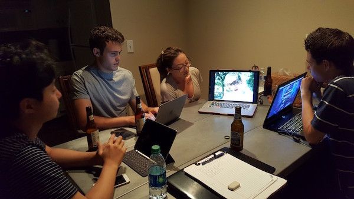

Tyler Sorensen
Senior @UCSD studying Cognitive Science HCI, w/Design minor. Passionate about design, innovation, technology, and biohacking (amongst many other things). Utah raised. ctsorens@ucsd.edu
Projects
What I'm Working OnEx·qui·site App
PhilanthroBot
Assorted Design Thinking
Resume
What I'm Working On
I'm kicking around a few ideas right now:
Currently Reading:
Be A Mindsetter by Michael Gobran, William Breenwald, Derek RobertsThe Exquisite App
My Role: Strategiest, Abstract and Concrete Designer
Exquisite is an emergent, adaptive, and personalized lexicon builder. It employs clever functions to quickly add unknown words and concepts to an individualized studylist that then utilizes cognitive science principles to adaptively and automatically quiz and teach said concepts. Concepts can be flexibly adpated to suit the needs of the learner. This was built in UCSD's COGS187a class. In this class, we were given 5 weeks to work (sprint!) through the design process.
WEEK 1: TEAM LOGO DESIGN
For our first assignment, we generated a name and logo for our team and settled on a random word: exquisite. We were also told to brainstorm potential ideas for a website or application to design and build throughout the duration of the class.
I had found myself reading through an article or academic paper and needing a definition for a word. I'd look it up and move on with my reading. A week later, I saw the same word again, but forgot what it means. Even though I researched the term the week prior, I forgot what it meant. Frustrating! I pitched the idea and it seemed to be a shared problem amongst my groupmates.
With this app idea in mind, we set upon creating our team logo. I decided to mimic a dictionary's format in my logo proposal, hence the middots separating the syllables in "exquisite". We like the cleanliness that the logo had, and settled on it for our team logo.
WEEK 2: NEEDFINDING
With the general premise of our idea in place, we spent week 2 needfinding. The first part of the week was spent interviewing. We asked a variety of demographics a loose set of questions, and emerged with a few consistent themes. The first
was that people who don't read, don't care. The people who seemed interested in the idea were people who make continuous efforts to better themselves.

Through interviews and personal experience, I've noticed that many people
have this arbitrary division in their knowledge. They silo academic learning from everyday learning, book smarts from street smarts. This distinction is unfortunate, and the reason why people don't bother to actually learn a definition to
a word rather than just reference Google. For many, the only learning that seems to matter is the learning that impacts their GPA. We want our app to bridge this learning dichotomy. The Exquisite app should broaden the user's lexicon. We want to help users integrate words and concepts they encounter each day into their broader body of knowledge wherein these concepts impacts the learning they care about.
WEEK 3: PERSONAS AND STORYBOARD
Next was a sketch of personas and storyboards. This represented our target demographic: people who take pride in self improvement.


WEEK 4: INITIAL DESIGNS, USER FEEDBACK AND DESIGN DECISIONS
Week 4 saw a lot of changes! We started with my initial home screen design and iterated from there.
The top rectangle is a search bar. At this point, we knew what the search bar functions were: to find a word in your list, a word in our dictionary that you may want to add, or search for a public list.
"Biology" and "CogSci" were called 'sublists' which eventually became stacks. These were a way to organize all of the words that a user had added.
Below that was "MyList", which had about 5 different names throughout the process. That is the large list of all words you have added. Every word you add exists in that list. You can tap on a word and it displays the definition.
At the bottom is a 'Study' button. That was emphasized because our goal is to teach the terms to the user. Ultimately, through user testing and intuition, we found it to disrupt the overall design of
what we had going. One user said it stuck out like a sore thumb. We decided to move past this idea.
The next iteration is our Low-Fi digital prototype, downloadable here (Interactive PDF).

This is the next home screen iteration. (from the low-fi digital prototype)
Here, we introduce a few features. The + at the top left is used to add a new word or new list. "Recently Added" shows your most recently added words, with a few of them previewed. We found this necessary because adding a word from
the iOS context menu requires you to share to the app, meaning that we can't sort the word into a list without opening the exquisite app. We felt that took too long, so recently added is where the user is directed to sort terms.
Big List is the same as MyList, just given a new name.
At the bottom, we have what were called buttons, menu, and finally tabs. The icon lit in red is where the user is at any one point. Home takes user home. Pencil is for studying (not writing - we changed that). The gears are for settings.
In hindsight, we should have formally defined and written down what we called every single feature -- from 'tabs' to 'sublists' to 'stacks' and on. We had several occasions where we passionately disagreed with
each other, only to find out that we were using different terminology for the same idea and actually agreed with each other.
WEEK 5: ITERATION TO FINAL CLASS PROTOTYPE
Final Demo (linear)
In week 5, we implemented our Flexible Flashcards. Each term has 2 default flashcards. One is the term, the other is the definition. From there, the user can add as many flashcards to their 'stack'of flashcards for that term. Users can add various photos and video to each card. In addition, every single card can be drawn on using the touch screen. The home screen is in 'dictionary' format, where if the user taps a word, they see the definition, but no more.

Back to the design!
PhilanthroBot
A philanthropic twitter bot leveraging social mediation and socially-informed algorithms to encourage users to donate and double their impact.
This project was inspired by the backlash regarding President Trump's immigration ban of 2017. Numerous individuals were matching donations to the ACLU in retaliation to the ban. Their process was clumsy. Twitter users were asked to @reply their ACLU donation receipts. Regardless, it was a rousing success. (all matching goals were met)

Key Observation: There are passionate people on the internet who are generous enough to donate if they care about an issue.
Luckily, others recognized the clumsiness of this process and designed platforms to solve it. Most are external websites that list a directory of donation-matchers. The issue with these implementations is that potential donors would 1) have to know about the organization that represents an issue and 2) have to know of this 3rd party website to get their donation matched. This in and of itself is clumsy. Luckily, Twitter offers an opportunity that these external websites didn't leverage.

The idea:
- Parse Twitter to identify users who are passionate about a particular issue
- Parse Twitter to identify users who are likely to donate
- Craft and send a tweet to with a link to a matched donation money